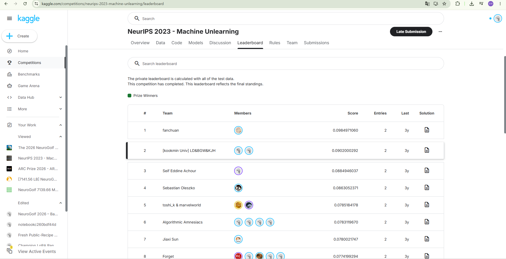

Personal portfolio and GitHub profile were reorganized around research, projects, and awards.
About
도메인 지식이 낯설수록, 데이터의 의미부터 다시 정의합니다.
저는 의료 CDM, 병리 이미지, 임상 예측, Machine Unlearning, Kaggle 대회, CAD/DXF 기반 전기공사 견적 시스템, 뉴스 기반 주식 분석 대시보드처럼 서로 다른 도메인의 데이터를 다뤄왔습니다. 모델 성능만 보는 것이 아니라 변수 정의, 데이터 흐름, 검증 기준, 실제 사용자가 이해할 수 있는 시스템 구조까지 함께 설계하는 데 관심이 있습니다.
News
Built applied AI/MCP-style systems for electrical routing, stock news analysis, and operations dashboards.
Started clinical AI research on MICU hyponatremia treatment response with Korea University College of Medicine.
Received poster/capstone awards for medical AI and CDM-based research support systems.
Research Experience
Korea University College of Medicine
MICU 저나트륨혈증 환자의 전해질 반응 및 수액치료 예측 연구를 진행하고 있습니다. 임상 변수 정의, 결측/치료 시점 해석, feature set 구성, 평가 기준 검토를 맡고 있습니다.
Kim Kwangsoo Lab
의료 CDM, 병리 H&E/IHC registration, LightGlue/SuperGlue matching, cell segmentation, 단백질 변이 기반 논문 수집 MCP 서버를 다뤘습니다.
Kookmin University ML&PR Lab
Machine Unlearning에서 gradient similarity 기반 weight initialization을 연구했습니다. pruning, knowledge distillation, poisoning 실험을 통해 retain/forget 성능과 privacy metric을 검증했습니다.
Publications
Gradient Similarity-based Weight Initialization for Machine Unlearning
PoPETs 2026, accepted.
Machine Unlearning에서 단순 재학습 비용을 줄이면서 retain data 성능과 forget data 제거 효과를 균형 있게 맞추기 위한 초기화 전략을 실험했습니다.
Selected Projects

Applied AI
Electrical DWG/DXF Routing Estimator
이안건설엔지니어링과 협업하며 DXF 좌표계, 도면 overlay, patch bbox, Hanan Grid/Rectilinear Steiner 기반 전기 배선 경로를 정리했습니다.

Data Product
Stock News Analysis Desk
뉴스와 가격 데이터를 함께 보고, 호재/악재/중립 판단 근거를 남기는 로컬 분석 대시보드입니다. 자동매매가 아니라 의사결정 보조 흐름에 집중했습니다.

Competition
NeuroGolf 2026
task-level graph/ONNX profiling, compact graph-surgeon blending, public/private score gap을 고려한 Kaggle-style 실험 관리 경험을 정리했습니다.
Medical AI
Medical CDM Explorer
자연어/논문/PDF에서 질환, 약제, 검사, 기간 조건을 추출해 연구용 코호트 조건으로 구조화하는 의료 데이터 탐색 파이프라인입니다.
LLM Reasoning
NVIDIA Nemotron Reasoning
LoRA/PEFT adapter, verifier audit, failure taxonomy, TIES/DARE/model-soup 기반 reasoning 성능 개선 실험을 정리했습니다.
Bioinformatics
CAFA6 Protein Function Prediction
단백질 sequence embedding, ontology feature, stacking, XGBoost/scikit-learn 기반 기능 예측 실험을 정리했습니다.
Honors & Awards
PoPETs 2026 Accepted Paper - Machine Unlearning research.
NeurIPS Machine Unlearning Challenge, 2nd Place - Kaggle competition award.
Kookmin Capstone Design Excellence Award - Bento medical CDM project.
Medical Informatics / Clinical Research Poster Awards - CDM and hyponatremia research.